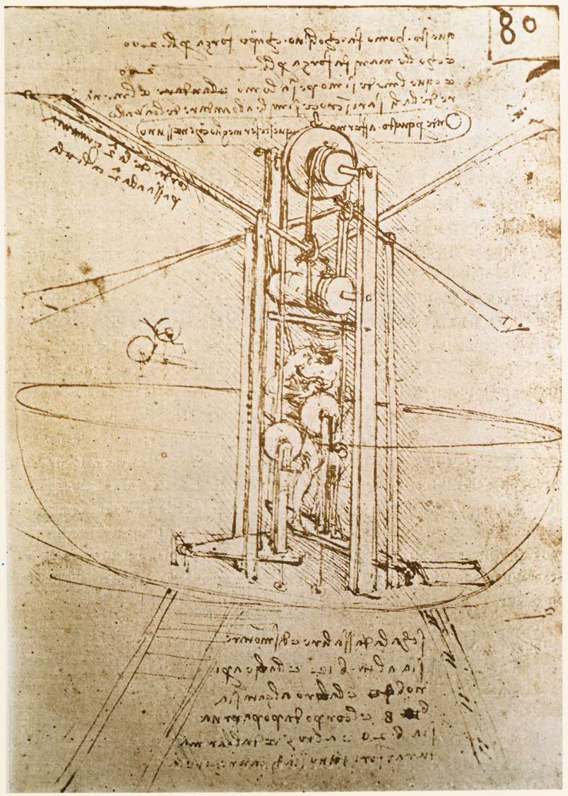

ゼロから生成まで：純粋な C++ で LLM 推論エンジンを一から構築した全記録

はじめに
毎日 LLM を使っているが、実際にはどうやって一連の token を人間の言葉に変換しているのだろうか？PyTorch、vLLM、llama.cpp といったフレームワークはすべての詳細を隠している——model.generate() を呼べば、テキストが出てくる。しかし、その間に何が起こっているのかを知りたかった。
そこで純粋な C++20 で、ML フレームワークに一切依存せず、ゼロから LLM 推論エンジンを書いた：vvllm。Qwen2.5-0.5B を動かすことができ、プロンプトを入力すると一貫性のあるテキストを出力する。プロセス全体——mmap による重み読み込みから、BPE エンコード、Transformer の順伝播、nucleus sampling まで——すべて手書きである。
この記事では、コードの実際のフローに沿って、このエンジンの構築と最適化の過程を一歩ずつ記録する。
問題定義
目標：テキスト（プロンプト）を与え、モデルに一貫性のある内容を続けて生成させる。
モデル：Qwen2.5-0.5B（通義千問 0.5B パラメータ版）
- hidden_size: 896
- num_hidden_layers: 24
- num_attention_heads: 14
- num_key_value_heads: 2（GQA, Grouped Query Attention）
- intermediate_size: 4864
- vocab_size: 151936
- 重みフォーマット：SafeTensors、BF16 保存、約 1GB ファイル / 1.9GB float32
制約：純粋な C++20、PyTorch / TensorFlow / ONNX Runtime は使わない。唯一許可される外部ライブラリは OpenBLAS（オプションの行列乗算加速）と nlohmann/json（設定ファイル解析）。
ビルドシステム：Bazel 7.4.1、aarch64 / x86_64 クロスプラットフォーム対応。
全体像
推論エンジン全体の構築と最適化は 7 ステップに分かれ、実際の開発順序に従う：
| ステップ | 内容 | 主要指標 |
|---|---|---|
| Step 0 | 基盤：Backend + Tensor + SafeTensors | 290 個の tensor を読み込み可能、BF16→F32 |
| Step 1 | BPE Tokenizer | テキスト ↔ token ID 相互変換 |
| Step 2 | Transformer 順伝播 | 24 層の完全な forward pass |
| Step 3 | RoPE 回転位置エンコーディングの修正 | 出力の文字化けから正しい生成へ |
| Step 4 | KV Cache | decode フェーズ 56× 高速化 |
| Step 5 | OpenBLAS による線形投影の加速 | 線形層 8.6× 高速化 |
| Step 6 | Sampler & 自己回帰生成 | Temperature + Top-p サンプリング |
Step 0: 基盤 — Backend + Tensor + SafeTensors
推論ロジックを書く前に、まず 3 つの基本的な問題を解決する必要がある：メモリ管理、計算の抽象化、モデル重みの読み込み。
Backend 抽象
抽象的な計算バックエンドインターフェースを定義する。すべての演算子（matmul、add、softmax、RoPE など）は仮想関数であり、具体的な実装はサブクラスが提供する。これにより、後で naive CPU と OpenBLAS バックエンドをシームレスに切り替えることができる：
class Backend {
public:
virtual void matmul(float* out, const float* A, const float* B,
std::size_t M, std::size_t N, std::size_t K) = 0;
virtual void rms_norm(float* out, const float* x, const float* weight,
std::size_t n, float eps) = 0;
virtual void softmax(float* out, const float* x, std::size_t n) = 0;
virtual void rope(float* q, float* k, std::size_t seq_len,
std::size_t num_heads, std::size_t num_kv_heads,
std::size_t head_dim, std::size_t pos, float theta) = 0;
virtual void linear(float* out, const float* inp, const float* weight,
const float* bias, std::size_t M, std::size_t N,
std::size_t K) = 0;
// ... add, mul, silu, embedding
};最初の実装は naive CPU バックエンド——すべての操作は最も素朴な for ループで行う。例えば linear projection（推論で最もコアな計算）：
void BackendCPU::linear(float* out, const float* inp, const float* weight,
const float* bias, std::size_t M, std::size_t N,
std::size_t K) {
// out[M, N] = inp[M, K] @ weight^T[K, N] + bias[N]
for (std::size_t i = 0; i < M; i++) {
for (std::size_t j = 0; j < N; j++) {
float sum = bias ? bias[j] : 0.0f;
for (std::size_t k = 0; k < K; k++) {
sum += inp[i * K + k] * weight[j * K + k];
}
out[i * N + j] = sum;
}
}
}三重ループ、O(M×N×K) のスカラー乗算。遅いが正しい。まず動かしてから最適化する。
SafeTensors ローダー
HuggingFace のモデル重みは SafeTensors 形式で保存される。形式は非常にシンプル：
+------------------+
| 8 bytes | header_size (uint64)
+------------------+
| JSON header | tensor names, shapes, dtypes, offsets
+------------------+
| raw tensor data | バイナリ浮動小数点データ（BF16 または F32）
+------------------+重要な設計上の決定は、ファイルの読み込みに read ではなく mmap を使用すること。mmap はファイルを仮想アドレス空間にマッピングし、OS が必要に応じてディスクからデータページを読み込む——ファイル全体を一度にメモリに読み込むのではない。1GB 以上の重みファイルに対して、起動時間とメモリピークを削減できる。
mapped_ = mmap(nullptr, file_size_, PROT_READ, MAP_PRIVATE, fd_, 0);Qwen2.5-0.5B の重みは BF16（Brain Float 16）形式で保存されている。BF16 と float32 は同じ 8 ビットの指数部を持ち、仮数部が 23 ビットから 7 ビットに切り詰められているだけ。変換は簡単——16 ビット左シフトするだけ：
float bf16_to_f32(uint16_t bf16) {
uint32_t bits = static_cast<uint32_t>(bf16) << 16;
float result;
std::memcpy(&result, &bits, sizeof(float));
return result;
}モデルには 290 個の tensor がある（各層に attention の Q/K/V/O 重み、MLP の gate/up/down 重み、2 つの layernorm 重み、さらに embedding と final norm）。読み込み後は約 1.9GB のメモリを占有する。
Step 1: BPE Tokenizer — テキストを数値に変換する
LLM の入力は生のテキストではなく、token ID の列である。Tokenizer はテキストと token ID 間の変換を担当する。Qwen2.5 は BPE（Byte Pair Encoding）分割を使用する。
エンコードは 3 ステップ：
"Hello world"
Step 1: Pre-tokenize（空白で分割、空白を Ġ プレフィックスに変換）
→ ["Hello", "Ġworld"]
Step 2: BPE merge（最も優先度の高い隣接ペアを繰り返しマージ）
"Ġworld" → ['Ġ', 'w', 'o', 'r', 'l', 'd']
→ ['Ġ', 'wo', 'r', 'l', 'd'] // merge('w','o'), rank=300
→ ['Ġ', 'wor', 'l', 'd'] // merge('wo','r')
→ ['Ġ', 'world'] // ...
→ ['Ġworld'] // final merge
Step 3: Lookup（語彙表を検索、token → ID）
['Hello', 'Ġworld'] → [9707, 1879]BPE のコアループ：各ラウンドで隣接するすべての token ペアをスキャンし、merge rank が最も低い（優先度が最も高い）ものを見つけて、新しい token にマージする。マージ可能なペアがなくなるまで繰り返す。
// Step 3: Apply BPE merges
while (tokens.size() > 1) {
int best_rank = -1;
size_t best_idx = 0;
for (size_t j = 0; j < tokens.size() - 1; j++) {
std::string key = tokens[j] + " " + tokens[j + 1];
auto it = merge_ranks_.find(key);
if (it != merge_ranks_.end()) {
if (best_rank < 0 || it->second < best_rank) {
best_rank = it->second;
best_idx = j;
}
}
}
if (best_rank < 0) break;
tokens[best_idx] = tokens[best_idx] + tokens[best_idx + 1];
tokens.erase(tokens.begin() + best_idx + 1);
}デコードは逆の操作：token ID から語彙表を検索して token 文字列を取得し、結合後に Ġ（UTF-8: 0xC4 0xA0）を空白に置き換える。
Qwen2.5 の語彙数は 151,936 個——つまり最終的な logits 出力も 151,936 次元のベクトルである。
Step 2: Transformer 順伝播 — 推論エンジンの核心
これがエンジン全体で最も重要な部分である。完全な forward pass は何をするのか？
token_ids: [t0, t1, t2, ..., tn]
|
Embedding Lookup
|
x: [seq_len, 896]
|
+----------+----------+
| Transformer |
| Layer × 24 |
| |
| RMS Norm |
| Q, K, V Projection |
| RoPE |
| Causal Attention |
| Output Projection |
| + Residual |
| RMS Norm |
| MLP (SwiGLU) |
| + Residual |
+----------+-----------+
|
Final RMS Norm
|
Logits Projection
|
logits: [151936]1. Embedding Lookup
最もシンプルなステップ：token ID を 896 次元のベクトルにマッピングする。embedding table は [151936, 896] の行列で、検索は 1 行の memcpy で済む：
void embedding(float* out, const float* table,
std::size_t token_id, std::size_t hidden_size) {
std::memcpy(out, table + token_id * hidden_size,
hidden_size * sizeof(float));
}2. RMS Norm
各層の入力はまず RMS 正規化を行う——LayerNorm に似ているが、平均を引かず、RMS（Root Mean Square）で割るだけ：
void rms_norm(float* out, const float* x, const float* weight,
std::size_t n, float eps) {
float sum = std::accumulate(x, x + n, 0.0f,
[](float acc, float x) { return acc + x * x; });
float rms = sqrt(sum / n + eps);
for (size_t i = 0; i < n; i++) {
out[i] = x[i] / rms * weight[i];
}
}数式：out[i] = (x[i] / √(mean(x²) + ε)) × weight[i]。RMS Norm は Layer Norm より平均値の計算と減算が 1 回ずつ少なく、推論時により高速で、実験的に同等の効果を示す。
3. Q, K, V 線形投影
注意機構の最初のステップ：896 次元の隠れ状態を Q, K, V 空間に投影する。これは行列乗算であり——LLM 推論で最も時間のかかる計算である。
// 各 token に対して Q, K, V を計算
for (std::size_t s = 0; s < seq_len; s++) {
const float* inp = norm_out.data() + s * hidden;
linear(q.data() + s * num_heads * head_dim,
inp, attn.q_proj_weight, q_bias(attn),
num_heads * head_dim, hidden, backend); // Q: [14×64, 896]
linear(k_new.data() + s * kv_dim,
inp, attn.k_proj_weight, k_bias(attn),
kv_dim, hidden, backend); // K: [2×64, 896]
linear(v_new.data() + s * kv_dim,
inp, attn.v_proj_weight, v_bias(attn),
kv_dim, hidden, backend); // V: [2×64, 896]
}重要な詳細に注意：Qwen2 は Grouped Query Attention (GQA) を使用している——14 個の query head が 2 個の KV head を共有する。つまり K と V の次元は 2×64=128 であり、Q の 14×64=896 よりはるかに小さい。これにより KV cache のメモリ使用量が大幅に削減される一方、モデル品質への影響は非常に小さい。
4. RoPE（回転位置エンコーディング）
Transformer 自体は位置不変である——入力の順序を入れ替えても出力は変わらない。RoPE は Q と K に位置依存の回転を適用することで、モデルが各 token のシーケンス内での位置を知ることができるようにする。
核心的アイデア：head_dim 次元ベクトルの各要素ペア (xi, xi+half) に対して、位置 pos と周波数 θ に基づいて 2 次元回転を行う：
for (std::size_t i = 0; i < half; i++) {
float freq = 1.0f / std::pow(theta, (float)(2 * i) / head_dim);
float angle = position * freq;
float x0 = head[i];
float x1 = head[i + half];
head[i] = x0 * cos(angle) - x1 * sin(angle);
head[i + half] = x0 * sin(angle) + x1 * cos(angle);
}周波数は低から高へ、低次元は高周波（局所的な位置関係）を、高次元は低周波（長距離依存）をエンコードする。これはフーリエ変換の考え方に似ている。
5. Causal Attention（因果注意機構）
これが Transformer の核心である。各 query 位置について、それ以前のすべての token との注意スコアを計算し、value の加重和を求める：
void causal_attention(float* out, const float* q, std::size_t q_idx,
const float* k, const float* v,
std::size_t attend_len, std::size_t num_heads,
std::size_t num_kv_heads, std::size_t head_dim,
float scale, Backend& backend) {
std::size_t groups = num_heads / num_kv_heads; // 14/2 = 7
for (std::size_t h = 0; h < num_heads; h++) {
std::size_t kv_h = h / groups; // GQA: 7 つの Q head が 1 つの KV head を共有
// 1. scores = Q · K^T / sqrt(head_dim)
for (std::size_t t = 0; t < attend_len; t++) {
float dot = 0.0f;
for (std::size_t d = 0; d < head_dim; d++) {
dot += q_head[d] * k_head[d];
}
scores[t] = dot * scale; // scale = 1/√64 = 0.125
}
// 2. attention weights = softmax(scores)
backend.softmax(scores.data(), scores.data(), attend_len);
// 3. output = weighted sum of V
for (std::size_t t = 0; t < attend_len; t++) {
for (std::size_t d = 0; d < head_dim; d++) {
head_out[d] += scores[t] * v_head[d];
}
}
}
}「Causal」の意味は：各 token は自分自身とそれ以前の token のみを参照でき、未来は見えないということ。これは attend_len = pos + s + 1 によって実現される——s 番目の token は s+1 個の位置のみを attend する。
6. MLP（SwiGLU）
注意機構の後は 2 層 MLP で、Qwen2 は SwiGLU 活性化関数を使用する：
// gate = linear(x, gate_proj) // [896] → [4864]
// up = linear(x, up_proj) // [896] → [4864]
// gate = silu(gate) * up // element-wise
// out = linear(gate, down_proj) // [4864] → [896]
backend.silu(gate.data(), gate.data(), seq_len * intermediate);
backend.mul(gate.data(), gate.data(), up.data(), seq_len * intermediate);SiLU（Swish とも呼ばれる）：silu(x) = x × σ(x) = x / (1 + e-x)。SwiGLU の「ゲーティング」機構により、ネットワークは情報を選択的に保持またはフィルタリングできる——gate パスがスイッチを制御し、up パスがコンテンツを提供する。
7. 残差接続
各 attention ブロックと MLP ブロックの後に残差接続がある：x = x + block_output。これは深層ネットワークの勾配消失問題を解決する——勾配は skip connection に沿って直接逆伝播でき、24 層で徐々にゼロに減衰することがない。
8. 最終予測
24 層の Transformer 処理が完了したら、最後の token の隠れ状態を取り、RMS Norm を行い、vocab 次元に投影して logits を得る：
// Final norm (only last token)
backend.rms_norm(final_out.data(),
x.data() + (seq_len - 1) * hidden,
final_norm_weight, hidden, eps);
// Logits = final_out @ embed_tokens^T (tied weights)
linear(logits.data(), final_out.data(), embed_tokens, nullptr,
config.vocab_size, hidden, backend);tied weights に注意：logits 投影行列と embedding table は同じ行列である。これは一般的なパラメータ共有テクニックで——入力（token→ベクトル）と出力（ベクトル→token 確率）が同じパラメータを使用し、151936×896 ≈ 1.36 億個のパラメータを削減する。
Step 3: バグ修正 — RoPE 回転位置エンコーディングのペアリング規則
forward pass を書き終えてモデルを実行したが——出力はすべて文字化けだった。長時間のデバッグの末、問題は RoPE のペアリング規則にあることが判明した。
RoPE は head_dim 次元のベクトルを 2 つずつペアにして回転させる必要がある。しかしペアリング方法には 2 種類ある：
head_dim = 8 のベクトル: [x0, x1, x2, x3, x4, x5, x6, x7]
Interleaved (GPT-NeoX 規則):
ペア (x0,x1), (x2,x3), (x4,x5), (x6,x7)
隣接要素をペアリング
Split-half (Qwen2 / Llama 規則):
ペア (x0,x4), (x1,x5), (x2,x6), (x3,x7)
前半と後半をペアリング最初は interleaved 規則を使った（多くの初期 GPT 実装がそうだったため）が、Qwen2 は split-half を使っている。2 つの規則の数学的本質は全く同じ——どちらも 2 次元回転——だが、異なる要素ペアに適用すると、結果は天と地ほど違う。
デバッグプロセス：
- まず Python で同じ入力を実行し、HuggingFace の logits 出力を比較
- 層ごとに比較し、第 1 層の Q projection の結果は正しいが、RoPE の後に不正確になることを発見
- numpy スクリプトを書いて 2 つの規則でそれぞれ RoPE を計算し、HuggingFace と比較
- split-half が HuggingFace の結果と一致することを確認し、C++ 実装を修正
教訓：LLM 推論で最もデバッグが難しいのはアルゴリズムのエラーではなく、規則の違いである。RoPE のペアリング方法、attention mask の実装、weight のレイアウト（[N,K] か [K,N] か）——これらの詳細は論文には書かれておらず、ソースコードを見るしかない。
Step 4: KV Cache — 56 倍の Decode 高速化
RoPE を修正し、モデルは正しくテキストを生成できるようになった。しかし速度は悲惨——各 token の生成に完全な forward pass を再実行する必要がある。
問題は自己回帰生成の本質にある：N 番目の token を生成する際、前の N-1 個の token すべての attention context が必要。naive なアプローチはすべての token を毎回モデルに再入力すること——しかし前の N-1 個の token の K, V は以前のステップで既に計算済み！
Naive (キャッシュなし):
Step 1: forward([t0, t1, t2, t3, t4]) ← 5 token、5 組の K,V を計算
Step 2: forward([t0, t1, t2, t3, t4, t5]) ← 6 token、6 組の K,V を再計算
Step 3: forward([t0, t1, t2, t3, t4, t5, t6]) ← 7 token、7 組の K,V を再計算
→ 計算量 O(n²)：各ステップですべての履歴を再計算
KV Cache:
Prefill: forward([t0, t1, t2, t3, t4]) ← 5 組の K,V をキャッシュ
Decode 1: forward([t5], pos=5) ← t5 の Q のみ計算、キャッシュの K,V を使用
Decode 2: forward([t6], pos=6) ← t6 の Q のみ計算、キャッシュの K,V を使用
→ 計算量 O(n)：各ステップで新しい token のみ計算KV Cache の実装は直感的——各層で常に増加する K と V のベクトルを維持する：
struct KVCache {
std::vector<std::vector<float>> k_cache; // [num_layers][seq_len * kv_dim]
std::vector<std::vector<float>> v_cache;
std::size_t seq_len = 0;
void append(std::size_t layer_idx, const float* new_k,
const float* new_v, std::size_t num_new_tokens,
std::size_t kv_dim) {
std::size_t count = num_new_tokens * kv_dim;
auto& kc = k_cache[layer_idx];
kc.insert(kc.end(), new_k, new_k + count);
auto& vc = v_cache[layer_idx];
vc.insert(vc.end(), new_v, new_v + count);
}
};forward pass では、新しい token の K, V がキャッシュに追加され、attention は完全なキャッシュ（現在の token だけでなく）を使用する：
// Append new K/V to cache
kv_cache.append(layer_idx, k_new.data(), v_new.data(), seq_len, kv_dim);
// Attention はキャッシュ内のすべての K/V を使用
causal_attention(attn_out, q.data(), s,
kv_cache.k_data(layer_idx), // すべての履歴 K
kv_cache.v_data(layer_idx), // すべての履歴 V
pos + s + 1, // attend 長
num_heads, num_kv_heads, head_dim, scale, backend);生成ループは 2 つのフェーズになる：
// Prefill: プロンプト全体を一括処理し、KV Cache を埋める
auto logits = forward(model, token_ids, 0, kv_cache);
// Decode: 毎回新しい token のみを送る
for (int step = 0; step < max_tokens; step++) {
int next_token = sampler.sample(logits);
std::size_t pos = token_ids.size() - 1;
logits = forward(model, {next_token}, pos, kv_cache); // 1 token のみ送信
}ベンチマーク結果（Google Benchmark, synthetic tiny model）：
| 方式 | Context=64 | 比較 |
|---|---|---|
| DecodeNoCache（各ステップで全量再計算） | ~20 ms | 1× |
| DecodeWithCache（新しい token のみ計算） | ~362 μs | 56× |
56 倍の高速化。しかもコンテキスト長が増えるほど差は大きくなる——キャッシュなしでは各ステップですべての token の K/V 投影を再計算し、計算量は O(n)；キャッシュありでは 1 token のみ計算し、計算量は O(1)（attention 自体は依然 O(n) だが、投影部分の節約は莫大）。
GQA もここで効果を発揮する：各層でキャッシュする必要があるのは 2 つの KV head（128 次元）のみで、14 個（896 次元）ではない。24 層モデルでは、KV cache のメモリ使用量が 7 倍削減される。
Step 5: OpenBLAS — 8.6 倍の線形投影高速化
プロファイリングの結果、推論時間の大部分が linear() 関数に費やされていることが判明——これは驚くことではない。1 つの Transformer 層には 7 つの線形投影（Q, K, V, O, gate, up, down）があり、それぞれが行列乗算である。Qwen2.5-0.5B の場合、最大の投影は [896, 4864]、すなわち 896×4864 ≈ 436 万回の乗加算演算。24 層で 1 億回になる。
naive バックエンドの三重ループ matmul は極めて非効率——前回の matmul 最適化記事のベースラインと同じで、SIMD なし、タイリングなし、キャッシュ最適化なし。
最も直接的な解決策：linear 操作を OpenBLAS の cblas_sgemm に置き換える：
void BackendBLAS::linear(float* out, const float* inp, const float* weight,
const float* bias, std::size_t M, std::size_t N,
std::size_t K) {
// out[M, N] = inp[M, K] @ weight^T[K, N]
// weight is [N, K] row-major, so we use CblasTrans on B.
cblas_sgemm(CblasRowMajor, CblasNoTrans, CblasTrans,
M, N, K, 1.0f, inp, K, weight, K, 0.0f, out, N);
if (bias) {
for (std::size_t i = 0; i < M; i++)
for (std::size_t j = 0; j < N; j++)
out[i * N + j] += bias[j];
}
}weight の保存形式に注意：PyTorch の慣例では weight の shape は [out_features, in_features]、つまり [N, K] の row-major。したがって inp @ weight^T は weight の転置が必要で、CblasTrans パラメータに対応する。
この 1 行の cblas_sgemm の背後には OpenBLAS の長年の最適化の結晶がある——SIMD ベクトル化、キャッシュフレンドリーなタイルレイアウト、レジスタレベルのマイクロカーネル——まさに前回の記事で 7 ステップかけて達成した最適化そのものである。
ベンチマーク結果（aarch64, -c opt）：
| Dimension | CPU (naive) | BLAS (OpenBLAS) | 高速化 |
|---|---|---|---|
| 64 | 2,227 ns | 884 ns | 2.5× |
| 128 | 12,148 ns | 3,804 ns | 3.2× |
| 256 | 58,317 ns | 16,672 ns | 3.5× |
| 576 | 366,660 ns | 42,761 ns | 8.6× |
次元が大きいほど、高速化比は高くなる。小さい行列（dim=64）では、OpenBLAS のスレッドスケジューリングとパッキングのオーバーヘッドが相対的に大きく、効果は限定的。しかし実際のモデルの次元（hidden_size=896, intermediate_size=4864）では、高速化効果は非常に顕著である。
バックエンドの切り替えは起動時にパラメータを 1 つ追加するだけ：--backend blas。Backend 抽象によりこの切り替えはゼロ侵襲——forward pass のコードは一切変更不要。
Step 6: Sampler — Logits からテキストへ
forward pass の出力は 151,936 次元の logits ベクトル——各値が 1 つの token の「可能性スコア」を表す。ここから次の token をどう選ぶか？
最もシンプルな方法：Greedy（貪欲法）
logits の最大値に対応する token を直接取る。決定的だが、繰り返しに陥りやすい。
Temperature Scaling
logits を temperature パラメータで割り、softmax を通して確率分布に変換する。temperature < 1 は分布をより尖鋭に（より決定的に）、temperature > 1 は分布をより平坦に（よりランダムに）する。
Top-p（Nucleus Sampling）
まず token を確率の高い順にソートし、累積確率が top_p 閾値を超えるまで加算し、それらの token のみからサンプリングする。これはランダム性を保ちつつ（greedy のように硬直しない）、低確率の「ノイズ」token を排除する（純粋なランダムのように不合理にならない）。
int Sampler::sample(const std::vector<float>& logits) {
if (temperature_ == 0.0f) {
return argmax(logits); // greedy
}
// 1. Temperature scaling + softmax
for (std::size_t i = 0; i < n; i++)
scaled[i] = logits[i] / temperature_;
softmax(scaled);
// 2. Top-p: sort by probability, keep cumsum <= top_p
std::sort(indices.begin(), indices.end(),
[&](int a, int b) { return scaled[a] > scaled[b]; });
float cumsum = 0.0f;
for (std::size_t i = 0; i < n; i++) {
cumsum += scaled[indices[i]];
if (cumsum >= top_p_) { cutoff = i + 1; break; }
}
// 3. Sample from the truncated distribution
std::uniform_real_distribution<float> dist(0.0f, kept_sum);
float r = dist(rng_);
// ... weighted random selection
}デフォルトパラメータは temperature=0.7, top_p=0.9——多様性と一貫性のバランスポイント。
すべてを繋ぎ合わせる
最終的な推論フロー：
// 1. 設定、重み、tokenizer を読み込む
auto config = load_config("config.json");
auto weights = SafeTensorsLoader("model.safetensors").load_all(backend);
auto model = create_model(config, backend);
load_weights(model, weights);
// 2. プロンプトをトークナイズ
auto token_ids = tokenizer.encode("The capital of France is"); // [5 tokens]
// 3. Prefill: プロンプト全体を処理
KVCache kv_cache(config.num_hidden_layers);
auto logits = forward(model, token_ids, 0, kv_cache);
// 4. Decode: token ごとに生成
for (int step = 0; step < max_tokens; step++) {
int next_token = sampler.sample(logits);
if (next_token == config.eos_token_id) break;
std::cout << tokenizer.decode({next_token}) << std::flush;
std::size_t pos = token_ids.size() - 1;
logits = forward(model, {next_token}, pos, kv_cache);
token_ids.push_back(next_token);
}出力：
Model: qwen2 (896d, 24 layers)
Loading weights...
Loaded 290 tensors
Model initialized
Prompt: "The capital of France is" (5 tokens)
The capital of France is Paris, where the most important cultural
institutions are located. The city is famous for its museums,
including the Lou動いた。
まとめと考察
この推論エンジンをゼロから構築して、いくつかの深い気づきがあった：
1. LLM 推論 = 大量の行列乗算。1 回の forward pass には 24 層 × 7 つの線形投影 = 168 回の matmul がある。これが LLM 推論で GPU がこれほど重要な理由——その核心的な強みは大規模並列 matmul にある。また OpenBLAS の 1 行のコードで 8.6 倍の高速化が得られる理由でもある。
2. KV Cache は推論最適化の最優先事項。56 倍の高速化で、実装もシンプル——本質的には append-only の配列。しかし生成の計算量クラスを変える：O(n²) から O(n) へ。KV Cache なしの LLM 推論は実用上使い物にならない。
3. 規則の違いはアルゴリズムのバグより発見が難しい。RoPE の split-half vs interleaved、weight の [N,K] vs [K,N]、BPE の空白プレフィックス——これらは論文では一言で片付けられるが、実装時にはそれぞれが半日のデバッグを要する可能性がある。リファレンス実装（HuggingFace）の中間結果との比較が唯一信頼できるデバッグ手段である。
4. 抽象層の設計は重要。Backend インターフェースにより、まず naive ループで正確性を確認し、次に OpenBLAS でパフォーマンスを向上させ、forward pass のコードは一行も変更不要。このシンプルな戦略により、正確性とパフォーマンスの 2 つの問題を同時にデバッグすることを回避できた。
5. 最大の収穫は理解すること。これほど多くの LLM フレームワークを使ってきたが、自分で手書きして初めて真に理解できた：なぜ KV Cache が長いコンテキストでこれほど重要なのか、なぜ GQA がメモリを大幅に削減できるのか、なぜ prefill と decode のパフォーマンス特性が全く異なるのか、なぜ tied embedding がメモリを節約しつつ品質を損なわないのか。
プロジェクト全体は約 1500 行の C++（テストとベンチマークを除く）で、実際の 0.5B モデルを動かしている。
Next Plan
Update: 後続の CUDA 最適化が完了した。詳細は Part 2: CPU から GPU へ — CUDA 最適化の道を参照。33 tok/s から 504 tok/s を達成した。
現在のエンジンは動くが、「使いやすい」にはまだ距離がある。次の計画を優先度順に進める：
- Instruct モデル対応 — 現在は base model の続き書きのみ対応。Instruct モデルには chat template のフォーマット（
<|im_start|>user\n...<|im_end|>）と、複数の stop token の処理が必要。これはモデルを真に「対話可能」にするための前提条件。 - マルチスレッド並列化 — 現在は完全にシングルスレッド。最も直接的な最適化は、linear projection の並列化（複数の head の QKV 投影を同時に計算可能）と、attention における複数 head の独立計算。CPU 上でさらに 3-5 倍の向上が見込まれる。
- CUDA GPU バックエンド — CPU 推論のボトルネックは matmul スループット。GPU の Tensor Core は大規模行列乗算に天然に適している。目標は最小限の CUDA バックエンドを書き、cuBLAS で OpenBLAS を置き換え、decode レイテンシをミリ秒レベルからマイクロ秒レベルに下げること。
- 量子化推論 (INT8/INT4) — 現在すべての重みは float32 で、0.5B モデルでも 1.9GB を占有する。INT8 量子化でメモリを半減、INT4 でさらに半減でき、同時に SIMD/GPU の整数演算スループットも高い。鍵となる課題は量子化後の精度損失の制御。
- Continuous Batching — 現在は単一シーケンスしか処理できない。本番レベルの推論エンジン（vLLM, TensorRT-LLM）の核心能力は複数のリクエストを同時処理し、KV cache メモリを動的にスケジューリングすること。これには PagedAttention などのより複雑なメモリ管理戦略が関わる。
"What I cannot create, I do not understand." — Richard Feynman